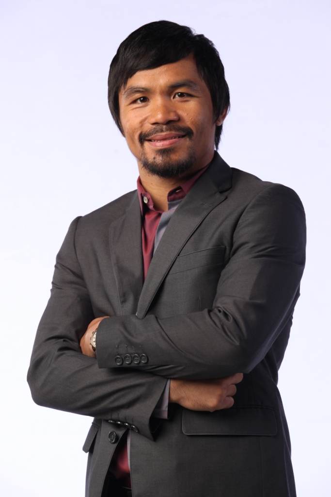
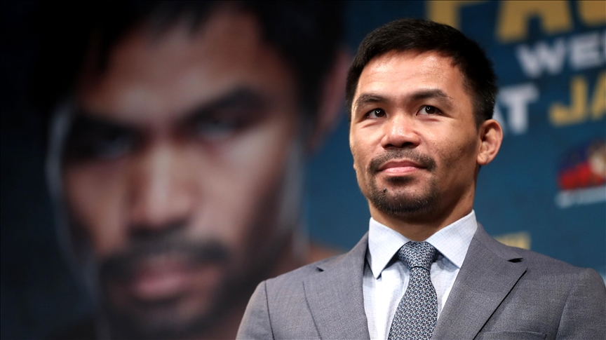

SENATOR | (MANNY) Emmanuel Dapidran Pacquiao
Manny Pacquiao, born Emmanuel Dapidran Pacquiao on December 17, 1978, in Kibawe, Bukidnon, Philippines, is a renowned Filipino professional boxer, politician, and former basketball player. Here's a brief overview of Manny Pacquiao's early life:
Birth and Family:
Manny Pacquiao was born into a poor family. His parents are Rosalio Pacquiao and Dionesia Dapidran-Pacquiao. They struggled to make ends meet, and Manny experienced poverty during his childhood.
Early Years in General Santos City:
Manny spent much of his early childhood in General Santos City, a city in the southern part of the Philippines. This is where he discovered his interest in boxing.
Introduction to Boxing:
Pacquiao's interest in boxing began at a young age. He reportedly started boxing at the age of 14. According to stories, he would use his fists to fight for food.
Move to Manila:
Seeking better opportunities, Manny Pacquiao left his hometown and moved to Manila, the capital city of the Philippines. This move marked the beginning of his journey into professional boxing.
Early Boxing Career:
Manny Pacquiao turned professional at the age of 16 on January 22, 1995. He quickly gained attention for his aggressive fighting style and knockout power.
Read More

PacMan
1978) is a Filipino politician and former professional boxer.[6] Nicknamed "PacMan", he is regarded as one of the greatest professional boxers of all time.[7][8] He previously served as a senator of the Philippines from 2016 to 2022.
Pacquiao is the only eight-division world champion in the history of boxing and has won twelve major world titles.[9][10] He was the first boxer to win the lineal championship in five different weight classes,[11][12][13] the first boxer to win major world titles in four of the eight "glamour divisions" (flyweight, featherweight, lightweight, and welterweight),[14][15][16] and is the only boxer to hold world championships across four decades (1990s, 2000s, 2010s, and 2020s).[17] In July 2019, Pacquiao became the oldest welterweight world champion in history at the age of 40,[18] and the first boxer in history to become a recognized four-time welterweight champion after defeating Keith Thurman to win the WBA (Super) welterweight title.[19] As of 2015, Pacquiao's fights had generated $1.2 billion in revenue from his 25 pay-per-view bouts.[20] According to Forbes, he was the second highest paid athlete in the world in 2015.[21]
Read More

Early life and education | Boxing career
Manny Pacquiao was born as Emmanuel Dapidran Pacquiao in Kibawe, Bukidnon, and raised in General Santos, Philippines. He is the son of Rosalio Pacquiao and actress Dionisia Dapidran.[27] His parents separated when he was in sixth grade, after his father had an affair.[27] He is the fourth of six siblings, one of whom, Alberto "Bobby" Pacquiao, is also a politician and former professional boxer.
At the age of 14, Pacquiao moved to Manila and lived on the streets, worked as a construction worker and had to pick between eating or sending money to his mother.[28] Pacquiao completed his elementary education at Saavedra Saway Elementary School in General Santos, but dropped out of high school due to extreme and abject poverty.[29]
In February 2007, Pacquiao took and passed a high school equivalency exam, and was awarded with a high school diploma by the Department of Education.[3
Manny Pacquiao has an amateur record of 60–4 and a record of 62–8–2 as a professional, with 39 wins by knockout. Boxing historian Bert Sugar ranked Pacquiao as the greatest southpaw fighter of all time.[31] In 2020, Pacquiao topped the Ranker's list of best boxers of the 21st century.[32][33]
Pacquiao made history by being the first boxer ever to win world titles in eight weight divisions, having won twelve major world titles, as well as being the first boxer to win the lineal championship in five different weight classes. Pacquiao is also the first boxer in history to win major world titles in four of the original eight weight classes of boxing, also known as the "glamour divisions" (flyweight, featherweight, lightweight and welterweight), and the first boxer ever to become a four-decade world champion, winning world championships across four decades (1990s, 2000s, 2010s, and 2020s).
Pacquiao was long rated as the best active boxer in the world, pound for pound, by most sporting news and boxing websites, including ESPN, Sports Illustrated, Sporting Life, Yahoo! Sports, About.com, BoxRec and The Ring, beginning from his climb to lightweight until his losses in 2012.[34][35] He is also the longest reigning top-ten active boxer on The Ring's pound for pound list from 2003 to 2016.[36]
Pacquiao has generated approximately 20.4 million in pay-per-view (PPV) buys and $1.3 billion in revenue from 26 PPV-bouts. Per Forbes, he was the world's second highest paid athlete in 2015.
Pacquiao signed with Bob Arum's Top Rank from 2015 to 2017 and Al Haymon's Premier Boxing Champions (PBC) promotion on 2018[37] alongside Paradigm Sports on 2020.[38]
On September 29, 2021, Pacquiao announced his retirement from boxing, in a post on social media.[39]
Read More